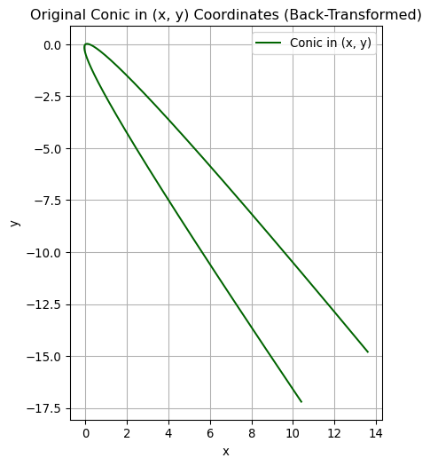

\[
\begin{aligned}
\mathbf{A} = \left(a_{ij}\right)_{m \times n} \; \text{ and } \;&\mathbf{B} = \left(b_{ij}\right)_{m \times n} \;\text{ are equal } \\[5pt]
\text{ if } a_{ij}=b_{ij} \;&\text{ for each } i \text{ and } j
\end{aligned}\]
where \(\mathbf{A}\) is an \(m \times p\) matrix, \(~\mathbf{B}\) is a \(p \times n\) matrix, and \(~\mathbf{A}\mathbf{B}\) is the \(m \times n\) matrix
In general, \(~\mathbf{A}\mathbf{B}\neq\mathbf{B}\mathbf{A}\)
In a triangular matrix, \(~\)all entries above or below the main diagonal are zeros (lower triangular or upper triangular)
In a diagonal matrix, \(~\)all entries not on the main diagonal are zeros
A scalar matrix is a diagonal one where all entries on the main diagonal are equal. \(~\)If those entries are \(1\)’s, it is an identity matrix, \(\mathbf{I}\) (or \(~\mathbf{I}_n\) when there is a need to emphasize the order of the matrix)
An \(n \times n\) matrix \(\mathbf{A}\) is symmetric\(~\)if \(\mathbf{A}^T=\mathbf{A}\)
Example\(\,\) Show that if \(\mathbf{A}\) is an \(m\times n\) matrix, \(~\)then \(\mathbf{AA}^T\) is symmetric
\(~\)
Example\(\,\) In matrix theory, \(~\)many of the familiar properties of the real number system are not valid. \(~\)If \(a\) and \(b\) are real numbers, then \(ab=0\;\) implies that \(a=0\) or \(b=0\). \(~\)Find two matrices such that \(\mathbf{AB}=\mathbf{0}~\) but \(\mathbf{A}\neq\mathbf{0}\) and \(\mathbf{B}\neq \mathbf{0}\)
\(~\)
Example\(\,\) Let \(\mathbf{A}\) and \(\mathbf{B}\) be \(n\times n\) matrices. Explain why, in general, the given formula is not valid
Example\(\,\) Find the resulting vector \(\mathbf{b}\) if the given vector \(\mathbf{a} = \langle 1, 1 \rangle\) is rotated through the indicated angle \(\theta=\pi/2\)
\(~\)
Example\(\,\) Verify that the quadratic form \(ax^2 +bxy +cy^2\) is the same as
\[\begin{pmatrix}
x & y
\end{pmatrix}
\begin{pmatrix}
a & \frac{1}{2}b \\
\frac{1}{2}b & c
\end{pmatrix}
\begin{pmatrix}
x \\ y
\end{pmatrix}\]
\(~\)
7.3 Systems of Linear Algebraic Equations
General Form
A system of \(m\) linear equations in \(n\) unknowns has the general form
The coefficients of the unknowns can be abbreviated as \(a_{ij}\). The numbers \(b_1, b_2, \cdots, b_m\) are called the constants of the system. If all the constants are zero, the system is said to be homogeneous, otherwise it is nonhomogeneous\[
\begin{aligned}
\mathbf{A}
&=
\begin{pmatrix}
a_{11} & a_{12} & \cdots & a_{1n} \\
a_{21} & a_{22} & \cdots & a_{2n} \\
\vdots & & \ddots & \\
a_{m1} & a_{m2} & \cdots & a_{mn} \\
\end{pmatrix}, \;\;
\mathbf{x} =
\begin{pmatrix}
x_1 \\ x_2 \\ \vdots \\ x_n
\end{pmatrix}, \;\;
\mathbf{b} =
\begin{pmatrix}
b_1 \\ b_2 \\ \vdots \\ b_m
\end{pmatrix}
\end{aligned}\]
\[\mathbf{A} \mathbf{x} = \mathbf{b}\]
A linear system of equations is said to be consistent if it has at least one solution and inconsistent if it has no solutions. If a linear system is consistent, \(~\)it has either
a unique solution (that is, precisely one solution), or
A homogeneous system of linear equations is always consistent. The solution consisting of all zeros is called the trivial solution. A homogeneous system either possesses only the trivial solution or possesses the trivial solution along with infinitely many nontrivial solutions
A homogeneous system possesses nontrivial solutions if the number \(m\) of equations is less than the number \(n\) of unknowns \((m<n)\)
\(~\)
Example\(\,\) Find the positive integers \(x_1\), \(x_2\), \(x_3\), and \(x_4\) so that
Then when we let \(x_4=t\), \(~x_1=\frac{1}{3}t\), \(x_2=\frac{7}{6}t\), \(x_3=\frac{2}{3}t\). \(\,\) If we pick \(t=6\), \(\,x_1=2\), \(\,x_2=7\), \(\,x_3=4\), \(\,x_4=6\)
\(~\)
Example\(\,\) Use either Gaussian elimination or Gauss-Jordan elimination to solve the given system or show that no solution exists
The rank of an \(m \times n\) matrix \(\mathbf{A}\), \(~\mathrm{rank}(\mathbf{A})\), \(\,\) is the maximum number of linearly independent row vectors. If a matrix \(\mathbf{A}\) is now equivalent to a row-echelon form \(\mathbf{B}\), \(~\)then
the row space of \(\mathbf{A}\) = the row space of \(\mathbf{B}\)
the nonezero rows of \(\mathbf{B}\) form a basis for the row space of \(\mathbf{A}\), \(~\)and
\(\mathrm{rank}(\mathbf{A})\) = the number of nonzero rows in \(\mathbf{B}\)
A linear system of equations \(\mathbf{A}\mathbf{x}=\mathbf{b}\) is consistent if and only if \(~\mathrm{rank}(\mathbf{A})=\mathrm{rank}(\mathbf{A}|\mathbf{b})\)
Suppose a linear system \(\mathbf{A}\mathbf{x}=\mathbf{b}\) with \(m\) equations and \(n\) unknowns is consistent. \(~\)If \(\mathrm{rank}(\mathbf{A})=r\leq n\), then the solution of the system contains \(n -r\) parameters. This means that we have the unique solution when \(r=n\)
Example\(\,\) Suppose the system \(\mathbf{Ax}=\mathbf{b}~\) is consistent and \(~\mathbf{A}\) is a \(5\times 8~\) matrix and \(~\mathrm{rank}\,\mathbf{A}=3.\)\(~\)How many parameters does the solution of the system have?
\(~\)
Example\(\,\) Let \(\mathbf{A}\) be a nonzero \(4 \times 6~\) matrix
1.\(~\) What is the maximum rank that \(~\mathbf{A}\) can have?
\(~\)
2.\(~\) If \(\mathrm{rank}(\mathbf{A}|\mathbf{b})=2\), \(~\)then for what value(s) of \(\mathrm{rank}(\mathbf{A})\) is the system \(~\mathbf{Ax}=\mathbf{b}\), \(~\mathbf{b}\neq \mathbf{0}\), inconsistent? Consistent?
\(~\)
3.\(~\) If \(\mathrm{rank}(\mathbf{A})=3\), \(~\)then how many parameters does the solution of the system \(~\mathbf{Ax}=\mathbf{0}~\) have?
\(~\)
Example\(\,\) Let \(\mathbf{v}_1\), \(\mathbf{v}_2\), and \(~\mathbf{v}_3~\) be the first, second, and third column vectors, respectively, of the matrix
where the summation is over all permutations \(l_1,\)\(l_2,\)\(\cdots,\)\(l_n\) of \(1,\)\(2,\)\(\cdots,\)\(n\) and the sign accords with the parity of the permutation
Cofactor and Minor
The cofactor of \(\,a_{ij}\) is the determinant
\[C_{ij}=(-1)^{i +j} M_{ij}\]
where \(M_{ij}\) is the determinant of the submatrix obtained by deleting the \(i\)-th row and the \(j\)-th column of \(\mathbf{A}\). The determinant \(M_{ij}\) is called a minor determinant
Cofactor Expansion of a Determinant: Laplace Development
Let \(\mathbf{A}=\left(a_{ij}\right)_{n \times n}\) be an \(n \times n\) matrix. \(~\)For each \(1 \leq i \leq n\), \(~\)the cofactor expansion of \(\mathrm{det}(\mathbf{A})\) along the \(i\)-th row is
If \(\mathbf{B}\) is the matrix obtained by interchanging any two rows (columns) of an \(n \times n\) matrix \(\mathbf{A}\), \(~\)then \(\mathrm{det}(\mathbf{B})=-\mathrm{det}(\mathbf{A})\)
If \(\mathbf{B}\) is the matrix obtained by multiplying a row (column) by a nonzero real number \(k\), \(~\) then \(\mathrm{det}(\mathbf{B})=k\,\mathrm{det}(\mathbf{A})\)
If \(\mathbf{A}\) and \(\mathbf{B}\) are both \(n \times n\) matrices, \(~\)then \(\mathrm{det}(\mathbf{AB})=\mathrm{det}(\mathbf{A})\cdot \mathrm{det}(\mathbf{B})\)
Suppose \(\mathbf{B}\) is the matrix obtained from an \(n \times n\) matrix \(\mathbf{A}\) by multiplying a row(column) by a nonzero \(k\) and adding the result to another row(column). \(~\) Then \(\mathrm{det}(\mathbf{B})=\mathrm{det}(\mathbf{A})\)
Suppose \(\mathbf{A}\) is an \(n \times n\) matrix. If \(a_{i1}, a_{i2}, \cdots, a_{in}\) are the entries in the \(i\)-th row and \(C_{p1}, C_{p2}, \cdots, C_{pn}\,\) are the cofactors of the entries in the \(p\)-th row, \(~\)then
\[\sum_{k=1}^n a_{ik}C_{pk}=0\;\;\text{for}\; i \neq p\]
If \(a_{1j}, a_{2j}, \cdots, a_{nj}\) are the entries in the \(j\)-th column and \(C_{1p},\)\(C_{2p},\)\(\cdots,\)\(C_{np}\) are the cofactors of the entries in the \(p\)-th column, \(~\)then
then \(\mathbf{A}\) is said to be nonsingular or invertible and \(\mathbf{B}\) is the inverse of \(\mathbf{A}\)
An \(n \times n\) matrix that has no inverse is called singular. If \(\mathbf{A}\) is nonsingular, \(~\)its inverse is denoted by \(\mathbf{B}=\mathbf{A}^{-1}\)
Properties of the Inverse
Let \(\mathbf{A}\) and \(\mathbf{B}~\) be nonsingular matrices. Then
The coefficient matrix \(\mathbf{A}\) is \(n \times n\). In particular, \(~\)if \(\mathbf{A}\) is nonsingular, \(~\)the system \(\mathbf{A}\mathbf{x}=\mathbf{b}\) can be solved by
\[\mathbf{x}=\mathbf{A}^{-1}\mathbf{b}\]
A homogeneous system of \(n\) linear equations in \(~n\) unknowns \(\mathbf{A}\mathbf{x}=\mathbf{0}\)\(~\)has
only the trivial solution if and only if \(\mathbf{A}\) is nonsingular
a nontrivial solution if and only if \(\mathbf{A}\) is singular
\(~\)
Example\(\,\) Verify that the matrix \(\mathbf{B}\) is the inverse of the matrix \(\mathbf{A}\)
Example\(\,\) Determine whether the given matrix is singular or nonsingular. \(\,\)If it is nonsingular, find the inverse using \(\mathbf{A}^{-1}=\frac{\mathrm{adj}\,\mathbf{A}}{\mathrm{det}\,\mathbf{A}}\)
What does \(\mathbf{A}=\mathbf{M}^{-1}\mathbf{B}\) represents?
\(~\)
Example\(\,\) A nonsingular matrix \(\mathbf{A}\) is said to be orthogonal if \(\mathbf{A}^{-1}=\mathbf{A}^T\)
1.\(~\) Verify tha the rotation matrix is orthogonal
2.\(~\) Verify that \[{\scriptsize\mathbf{A}=\frac{1}{\sqrt{6}}\begin{pmatrix}
\sqrt{2} & \phantom{-}0 & -2 \\
\sqrt{2} & \phantom{-}\sqrt{3} & \phantom{-}1\\
\sqrt{2} & -\sqrt{3} & \phantom{-}1
\end{pmatrix}}~\] is an orthogonal matrix
\(~\)
Example\(\,\) Answer the questions based on the supposition
Show that if \(\mathbf{A}\) is an orthogonal matrix, \(~\)then \(\mathrm{det}\,\mathbf{A}=\pm 1\)
Suppose \(\mathbf{A}\) and \(\mathbf{B}~\) are nonsingular \(~n\times n\) matrices. Then show that \(\mathbf{AB}~\) is nonsingular
Suppose \(\mathbf{A}\) and \(\mathbf{B}~\) are \(~n\times n\) matrices and that either \(\mathbf{A}\) or \(\mathbf{B}~\) is singular. \(~\)Then show that \(\mathbf{AB}~\) is singular
Suppose \(\mathbf{A}~\) is a nonsingular matrix. \(~\)Then show that \(\displaystyle\mathrm{det}\,\mathbf{A}^{-1}=\frac{1}{\mathrm{det}\,\mathbf{A}}\)
Suppose \(\mathbf{A}^2=\mathbf{A}\). \(~\)Then show that either \(\mathbf{A}=\mathbf{I}~\) or \(~\mathbf{A}~\) is singular
Suppose \(\mathbf{A}\) and \(\mathbf{B}~\) are \(~n\times n\) matrices. \(~\mathbf{A}~\) is nonsingular, \(~\) and \(\mathbf{AB}=\mathbf{0}\). \(~\)Then show that \(\mathbf{B}=\mathbf{0}\)
Suppose \(\mathbf{A}\) and \(\mathbf{B}~\) are \(~n\times n\) matrices. \(~\mathbf{A}~\) is nonsingular, \(~\) and \(\mathbf{AB}=\mathbf{AC}\). \(~\)Then show that \(\mathbf{B}=\mathbf{C}\)
Suppose \(\mathbf{A}\) and \(\mathbf{B}~\) are nonsingular \(~n\times n\) matrices. Is \(~\mathbf{A} +\mathbf{B}~\) necessarily nonsingular?
Suppose \(\mathbf{A}~\) is a nonsingular matrix. \(~\)Then show that \(\mathbf{A}^T~\) is nonsingular
Suppose \(\mathbf{A}\) and \(\mathbf{B}~\) are \(~n\times n~\) nonzero matrices and \(\mathbf{AB}=\mathbf{0}\). \(~\)Then show that both \(\mathbf{A}~\) and \(~\mathbf{B~}\) are singular
7.8 Cramer’s Rule
If \(\mathrm{det}(\mathbf{A}) \neq 0\), \(~\)the solution of the system is given by
2. The system is said to be ill-conditioned since small changes in the input data(for example, the coefficients) causes a significant or large change in the output or solution. \(~\)Verify this by finding the solution of the system for \(\epsilon=1.01\) and then for \(\epsilon=0.99\)
\(~\)
7.9 The Eigenvalue Problem
Let \(\mathbf{A}\) be an \(n \times n~\) matrix. \(~\)A number \(\lambda\) is said to be an eigenvalue of \(\mathbf{A}\) if there exists a nonzero solution vector \(\mathbf{k}\) of the linear system
\[\mathbf{A}\mathbf{k}=\lambda\mathbf{k}\]
and the solution vector \(\mathbf{k}\) is said to be an eigenvector corresponding to the eigenvalue \(\lambda\)
The problem of solving \(~\mathbf{A}\mathbf{k}=\lambda\mathbf{k}~\) for nonzero vectors \(\mathbf{k}\) is called to be the eigenvalue problem for \(\mathbf{A}\)
We must solve the characteristic equation\(~\mathrm{det}(\mathbf{A} -\lambda\mathbf{I})=0~\) to find an eigenvalue \(\lambda\)
To find an eigenvector \(\mathbf{k}\) corresponding to an eigenvalue \(\lambda\), \(~\)we solve \(~(\mathbf{A} -\lambda\mathbf{I})\mathbf{k}=\mathbf{0}~\) by applying Gauss elimination to \(~(\mathbf{A} -\lambda\mathbf{I}|\mathbf{0})\)
\(~\)
Example\(\,\) Find the eigenvalues and eigenvectors of
Here \(k_1 +k_2 +k_3=0\), \(~\)we are free to select two of the variables arbitrarily
Choosing, \(\,\) on the one hand, \(~k_2=1\), \(\,k_3=0\), and on the other, \(~k_2=0\), \(\,k_3=1\), \(\,\) we obtain two linearly independent eigenvectors
If instead we choose \(k_2=1\), \(k_3=1\) and then \(k_2=1\), \(k_3=-1\), \(~\)we obtain, respectively, two entirely different but orthogonal eigenvectors
We define the geometric multiplicity of an eigenvalue to be the number of linearly independent eigenvectors for the eigenvalue
When the geometric multiplicity of an eigenvalue is less than the algebraic multiplicity, \(~\) we say the matrix is defective. \(~\) In the case of defective matrices, \(~\) we must search for additional system
Let \(\mathbf{A}\) be a square matrix with real entries. If \(\lambda=\alpha +i\beta\), \(~\beta \neq 0\), \(~\)is a complex eigenvalue of \(\mathbf{A}\),
\(\lambda=0~\) is an eigenvalue of \(~\mathbf{A}\) if and only if \(~\mathbf{A}\) is singular
If \(~\lambda~\) is an eigenvalue of nonsingular \(~\mathbf{A}\) with eigenvector \(~\mathbf{k}\), \(~1/\lambda\) is an eigenvalue of \(~\mathbf{A}^{-1}\) with the same eigenvector \(~\mathbf{k}\)
The eigenvalues of an upper triangular, \(~\)lower triangular, \(~\)and diagonal matrix are the main diagonal entries
\(~\)
Example\(\,\) Find the eigenvalues and eigenvectors of the given matrix. \(~\)State whether the matrix is singular or nonsingular
Example\(\,\) Find the eigenvalues and eigenvectors of the given nonsingular matrix \(\mathbf{A}\). \(~\)Then without finding \(\mathbf{A}^{-1}\), \(~\)find its eigenvalues and corresponding eigenvectors
Example\(\,\) True or False: \(~\) If \(\lambda\) is an eigenvalue of an \(n \times n~\) matrix \(\mathbf{A}\), \(~\) then the matrix \(\mathbf{A}-\lambda\mathbf{I}~\) is singular. Justify your answer
\(~\)
Example\(\,\) Suppose \(\lambda\) is an eigenvalue with corresponding eigenvector \(~\mathbf{k}~\) of an \(n\times n~\) matrix \(\mathbf{A}\)
1. If \(\mathbf{A}^2=\mathbf{AA}\), \(~\) then show that \(\mathbf{A}^2\mathbf{k}=\lambda^2\mathbf{k}\). \(~\) Explain the meaning of the last equation
2. Verify the result obtained in part 1 for the matrix
Example\(\,\) Let \(\mathbf{A}\) and \(\mathbf{B}\) be \(n \times n~\) matrices. The matrix \(\mathbf{B}\) is said to be similar to the matrix \(\mathbf{A}~\) if there exists a nonsingular matrix \(\mathbf{S}\) such that \(\mathbf{B}=\mathbf{S}^{-1}\mathbf{AS}\). \(~\)If \(\mathbf{B}\) is similar to \(\mathbf{A}\), \(~\)then show that \(\mathbf{A}\) is similar to \(\mathbf{B}\)
\(~\)
Example\(\,\) Suppose \(\mathbf{A}\) and \(\mathbf{B}\) are similar matrices. Show that \(\mathbf{A}\) and \(\mathbf{B}\) have the same eigenvalues
\(~\)
7.10 Powers of Matrices
Cayley-Hamilton Theorem
If \((-1)^n \lambda^n +c_{n-1}\lambda^{n-1} + \cdots +c_1 \lambda +c_0 = 0~\) is the characteristic equation of \(n \times n\) matrix \(\mathbf{A}\), \(~\)then
Example\(\,\) Show that the given matrix has an eigenvalue \(\lambda_1\) of multiplicity two. \(~\) As a consequence, \(~\)the equation \(\lambda^m=c_0+c_1\lambda\) does not yield enough independent equations to form a system for determining the coefficients \(c_i\). \(~\)Use the derivative (with respect to \(\lambda\)) of this equation evaluated at \(\lambda_1\) as the extra needed equation to form a system. \(~\)Compute \(\mathbf{A}^m\) and use this result to compute the indicated power of the matrix \(\mathbf{A}\)
is \(0\). \(~\)Compute \(\mathbf{A}^m\) in each case. \(~\)In part (a), \(~\)explain why we do not have to solve any system for the coefficients \(c_1\) in determining \(\mathbf{A}^m\)
Example\(\,\) A non-zero \(n \times n\) matrix \(\mathbf{A}~\) is said to be nilpotent of index \(m\)\(~\)if \(m\) is the smallest positive integer for which \(\mathbf{A}^m=\mathbf{0}\).
1.\(~\)Explain why any nilpotent matrix \(~\mathbf{A}\) is singular
2.\(~\)Show that all the eigenvalues of a nilpotent matrix \(~\mathbf{A}\) are \(0\)
7.11 Orthogonal Matrices
Let \(\mathbf{A}\) be a symmetric matrix (\(\mathbf{A}=\mathbf{A}^T\)) with real entries. Then the eigenvalues of \(\mathbf{A}\) are real
Let \(\mathbf{A}\) be a symmetric matrix. Then eigenvectors corresponding to distinct(different) eigenvalues are orthogonal
An \(n \times n\) matrix \(\mathbf{A}\) is orthogonal (\(\mathbf{A}^{-1}=\mathbf{A}^T\)) \(~\)if and only if its columns \(\mathbf{x}_1,\)\(\mathbf{x}_2,\)\(\cdots,\)\(\mathbf{x}_n\) form an orthonormal set
It may not be possible to find \(n\) linearly independent eigenvectors for an \(n \times n\) matrix \(\mathbf{A}\) when some of eigenvalues are repeated (defective matrix)
But a symmetric matrix is an exception. \(~\)It can be proved that a set of \(n\) linearly independent eigenvectors can always be found for an \(n \times n\) symmetric matrix \(\mathbf{A}\) even there is some repetition of the eigenvalues
However, \(~\)this does not mean that all eigenvectors are mutually orthogonal for an \(n \times n\) symmetric matrix \(\mathbf{A}\). The set of eigenvectors corresponding to distinct eigenvalues are orthogonal; \(~\)but different eigenvectors corresponding to a repeated eigenvalue may not be orthogonal
But it is always possible to find or construct a set of \(n\) mutually orthogonal eigenvectors by using Gram-Schmidt orthogonalization. See Section 10.7
\(~\)
Example\(\,\) Construct an orthogonal matrix from the eigenvectors of
Example\(\,\) (a)\(~\) Verify that the indicated column vectors are eigenvectors of the given symmetric matrix and \(~\)(b)\(~\) identify the corresponding eigenvalues. \(~\)(c)\(~\) Use Gram-Schmidt process to construct an orthogonal matrix \(\mathbf{P}\) from the eigenvectors
Example\(\,\) Answer the questions based on the supposition
Suppose \(\mathbf{A}\) and \(\mathbf{B}~\) are \(~n\times n\) orthogonal matrices. Then show that \(\mathbf{AB}~\) is orthogonal
Suppose \(\mathbf{A}\) is an orthogonal matrix. \(~\)Is \(\mathbf{A}^2~\) is orthogonal
Suppose \(\mathbf{A}~\) is an orthogonal matrix. \(~\)Then show that \(\mathbf{A}^{-1}\) is orthogonal
Suppose \(\mathbf{A}~\) is an orthogonal matrix such that \(~\mathbf{A}^2=\mathbf{I}~\). \(~\)Then show that \(\mathbf{A}^T=\mathbf{A}\)
Show that the rotation matrix is orthogonal
\(~\)
7.12 Approximation of Eigenvalues
Let \(\lambda_1\), \(\lambda_2\), \(\cdots\), \(\lambda_k\), \(\cdots\), \(\lambda_n\) denote the eigenvalues of an \(n \times n\) matrix \(\mathbf{A}\). The eigenvalue \(\lambda_k\) is said to be the dominant eigenvalue of \(\mathbf{A}\) if \(|\lambda_k| > |\lambda_i|\), \(~i=1,2,\cdots,n\), \(~\)but \(\text{ }i \neq k\)
An eigenvector corresponding to \(\lambda_k\) is called the dominant eigenvector of \(\mathbf{A}\)
Power Method
Let us assume that the eigenvalues of \(\mathbf{A}\) are such that \(|\lambda_1| > |\lambda_2| \geq |\lambda_3| \geq \cdots \geq |\lambda_n|\) and that the corresponding \(n\) eigenvectors \(\mathbf{k}_1\), \(\mathbf{k}_2\), \(\cdots\), \(\mathbf{k}_n\) are linearly independent. \(~\)Because of this last assumption, \(~n\) eigenvectors can serve as a basis for \(\mathbb{R}^n\). \(~\)For any nonzero \(n \times 1\) vector \(\mathbf{x}_0\),
For large values of \(m\) and under all the assumptions that were made, \(~\)the \(n \times 1\) vector \(\mathbf{x}_m\) is an approximation to a dominant eigenvector associated with the dominant eigenvalue \(\lambda_1\)
If \(\mathbf{x}_m\) is an approximation to a dominant eigenvector, \(~\)then the dominant eigenvalue \(\lambda_1\) can be approximated by the Rayleigh quotient
Iteration often results in vectors whose entries become very large. \(~\)Large numbers can cause a problem in computation. One way around this difficulty is to use a scaled-down normalized vector
After we have found the dominant eigenvalue \(\lambda_1\) of a matrix \(\mathbf{A}\), \(\,\)it may still be necessary to find nondominant eigenvalues. \(\,\)We will limit the discussion to the case where \(\mathbf{A}\) is a symmetric matrix
Suppose \(\lambda_1\) and \(\mathbf{k}_1\) are, respectively, the dominant eigenvalue and a corresponding normalized eigenvector of a symmetric matrix \(\mathbf{A}\). \(\,\)Furthermore, \(\,\)suppose the eigenvalues of \(\mathbf{A}\) are such that
has eigenvalues \(0\), \(|\lambda_2|\), \(|\lambda_3|\), \(\cdots\), \(|\lambda_n|\) and that eigenvectors of \(\mathbf{A}_1\) are also eigenvectors of \(\mathbf{A}\). \(~\) Note that \(\lambda_2\) is now the dominant eigenvalue of \(\mathbf{A}_1\)
If we want to find the smallest eigenvalue instead of the largest one, then we perform power iteration for \(\mathbf{A}^{−1}\) (since the eigenvalues of \(\mathbf{A}^{-1}\) are the reciprocals of the eigenvalues of \(\mathbf{A}\)). Of course, \(~\)we do not want to compute \(\mathbf{A}^{-1}\)
def inverse_power_method(A, n_iteration):# Ideally choose a random vector# To decrease the chance that # our vector is orthogonal to the eigenvector k = np.random.rand(A.shape[1])for _ inrange(n_iteration):# calculate the matrix-by-vector product Ak w = np.linalg.solve(A, k)# calculate the norm w_norm = np.linalg.norm(w)# re normalize the vector k = w /w_normreturn kA = np.array([[4, 2], [3, -1]])k_2 = inverse_power_method(A, 10)lambda_2 = Rayleigh_quotient(A, k_2)print('A =')pprint.pprint(A)print('\nEigenvector =', np.around(k_2, 3))print('Eigenvalue of Least Magnitude =', np.around(lambda_2, 3))
A =
array([[ 4, 2],
[ 3, -1]])
Eigenvector = [-0.316 0.949]
Eigenvalue of Least Magnitude = -2.0
7.13 Diagonalization
For an \(n \times n\) matrix \(\mathbf{A}\), \(~\)can we find an \(n \times n\,\) nonsingular matrix \(\mathbf{P}\) such that \(\mathbf{P}^{-1}\mathbf{A}\mathbf{P}=\mathbf{D}\) is a diagonal matrix?
An \(n \times n\) matrix \(\mathbf{A}\) is diagonalizable if and only if \(\mathbf{A}\) has \(n\) linearly independent eigenvectors
Let \(\mathbf{k}_1\), \(\mathbf{k}_2\), \(\cdots\), \(\mathbf{k}_n\) be linearly independent eigenvectors corresponding to eigenvalues \(\lambda_1\), \(\lambda_2\), \(\cdots\), \(\lambda_n\). \(~\)Next form the matrix \(~\mathbf{P}~\) with column vectors \(~\mathbf{k}_1\), \(\mathbf{k}_2\), \(\cdots\), \(\mathbf{k}_n\)
Multiplying these vectors, in turn, by the reciprocals of the norms \(\left \| \mathbf{k}_1 \right \|=\sqrt{3}\), \(\,\left \| \mathbf{k}_2 \right \|=\sqrt{6}\,\) and \(\,\left \| \mathbf{k}_3 \right \|=\sqrt{2}\), \(\,\)we obtain an orthonormal set
The entries in \(\mathbf{D}\) are the eigenvalues of \(\mathbf{A}\) and the order in which these numbers appear on the diagonal corresponds to the order in which the eigenvectors are used as columns in the matrix \(\mathbf{P}\)
\(~\)
Example - Quadratic Forms:\(\,\) Identify the conic section whose equation \(\,2x^2 +4xy -y^2 =1\)
We can write the given equation as
\[
\begin{pmatrix}
x & y
\end{pmatrix}
\left(\begin{array}{rr}
2 & 2\\
2 &-1
\end{array}\right)
\begin{pmatrix}
x \\
y
\end{pmatrix}
=1 \;\text{ or }\; \mathbf{x}^T\mathbf{A}\mathbf{x}=1
\]
The eigenvalues and corresponding eigenvectors of \(\mathbf{A}\) are found to be
Observe that \(\mathbf{k}_1\) and \(\mathbf{k}_2\) are orthogonal. \(~\)Moreover, \(~\left \| \mathbf{k}_1 \right \| =\left \| \mathbf{k}_2 \right \| =\sqrt{5}\), \(~\) and so the vectors
If we define the change of variables \(~\mathbf{x}=\mathbf{P}\bar{\mathbf{x}}\text{ }\) where \(\scriptsize \bar{\mathbf{x}}=\begin{pmatrix} \bar{x} \\ \bar{y} \end{pmatrix}\), \(\,\)then the quadratic form can be written
Example\(\,\) Determine whether the given matrix \(\mathbf{A}\) is diagonalizable. \(~\) If so, find the matrix \(\mathbf{P}\) that diagonalizes \(\mathbf{A}\) and the disgonal matrix \(\mathbf{D}\) such that \(\mathbf{D}=\mathbf{P}^{-1}\mathbf{AP}\)
Example\(\,\) The given matrix \(\mathbf{A}\) is symmetric. \(~\) Find an orthogonal matrix \(\mathbf{P}\) that diagonalizes \(\mathbf{A}\) and the diagonal matrix \(\mathbf{D }\) such that \(\mathbf{D}=\mathbf{P}^T\mathbf{AP}\)
Example\(\,\) Find \(3 \times 3~\) symmetric matrix that has eigenvalues \(~\lambda_1=1\), \(~\lambda_2=3\), and \(~\lambda_3=5\) and corresponding eigenvectors
Example\(\,\) If \(\mathbf{A}\) is an \(n\times n~\) diagonalizable matrix, then \(\mathbf{D}=\mathbf{P}^{-1}\mathbf{AP}\), \(~\) where \(\mathbf{D}\) is a diagonal matrix. \(~\) Show that if \(m\) is a positive integer, then \(\mathbf{A}^m=\mathbf{PD}^m\mathbf{P}^{-1}\)
\(~\)
Example\(\,\) Find the indicated power of the given matrix
Example\(\,\) Suppose \(\mathbf{A}\) is a nonsingular diagonalizable matrix. Then show that \(\mathbf{A}^{-1}\) is diagonalizable
\(~\)
Example\(\,\) Suppose \(\mathbf{A}\) is a diagonalizable matrix. \(~\)Is the matrix \(\mathbf{P}\) unique?
\(~\)
7.14 LU Factorization
Let \(\mathbf{A}\) be a square matrix. \(~\)An LU factorization refers to the factorization of \(\mathbf{A}\) into two factors – a lower triangular matrix \(\mathbf{L}\) and an upper triangular matrix \(\mathbf{U}\):
\[\mathbf{A}=\mathbf{L}\mathbf{U}\]
Without a proper ordering or permutations in the matrix, \(~\)the factorization may fail to materialize. \(\,\)This is a procedural problem. \(\,\)It can be removed by simply reordering the rows of \(\mathbf{A}\). \(\,\)It turns out that a proper permutation in rows (or columns) is sufficient for LU factorization. \(\,\)LU factorization with partial pivoting (LUP) refers often to LU factorization with row permutations only
\[\mathbf{P}\mathbf{A}=\mathbf{L}\mathbf{U}\]
where \(\mathbf{P}\) is a permutation matrix, which, when left-multiplied to \(\mathbf{A}\), reorders the rows of \(\mathbf{A}\). \(\,\)It turns out that all square matrices can be factorized in this form
If \(\mathbf{A}\) is invertible, then it admits an LU factorization if and only if all its leading principal minors are nonzero. \(\,\)If \(\mathbf{A}\) is a singular matrix of rank \(k\), \(\,\)then it admits an LU factorization if the first \(k\) leading principal minors are nonzero
LU decomposition is basically a modified form of Gaussian elimination. \(~\)We transform the matrix \(\mathbf{A}\) into an upper triangular matrix \(\mathbf{U}\) by eliminating the entries below the main diagonal. \(\,\)The Doolittle algorithm does the column-by-column elimination, starting from the left, by multiplying \(\mathbf{A}\) to the left with atomic lower triangular matrices. It results in a unit lower triangular matrix and an upper triangular matrix
\(~\)
Doolittle Algorithm
We define
\[\mathbf{A}^{(0)}=\mathbf{A}\]
We eliminate the matrix elements below the main diagonal in the \(k\)-th column of \(\mathbf{A}^{(k -1)}\) by adding to the \(i\)-th row of this matrix the \(k\)-th row multiplied by
\[l_{i,k}=\frac{a_{i,k}^{(k-1)}}{a_{k,k}^{(k-1)}} \;\text{ for }\; i=k+1, \cdots, n\]
This can be done by multiplying \(\mathbf{A}^{(k -1)}\) to the left with the lower triangular matrix
After \(n -1\) steps, \(~\)we eliminated all the matrix elements below the main diagonal, \(\,\)so we obtain an upper triangular matrix \(\mathbf{A}^{(n -1)}\). \(\,\)We find the decomposition
Denote the upper triangular matrix \(\mathbf{A}^{(n -1)}\) by \(\mathbf{U}\), \(\,\) and \(\mathbf{L}=\mathbf{L}_1^{-1}\cdots\mathbf{L}_{n -1}^{-1}\)
Because the inverse of a lower triangular matrix \(\mathbf{L}_k\) is again a lower triangular matrix, and the multiplication of two lower triangular matrices is again a lower triangular matrix, it follows that \(\mathbf{L}\) is a lower triangular matrix:
NOTE\(\,\)It is clear that in order for this algorithm to work, one needs to have \(a_{k,k}^{(k-1)}\) at each step (see the definition of \(l_{i,k}\)). If this assumption fails at some point, one needs to interchange \(k\)-th row with another row below it before continuing. This is why an LU decomposition in general looks like \(\mathbf{P}\mathbf{A}=\mathbf{L}\mathbf{U}\)
\(~\)
def lu_factor(A):""" LU factorization with partial pivoting PA = LU P(permutation), L(unit Lower triangular) and U(upper triangular) Return P, L, U """ n = A.shape[0] U = A.copy() P = np.identity(n) L = np.identity(n)for k inrange(n -1):# Partial Pivoting max_row_index = np.argmax(abs(U[k:n,k])) +k P[[k,max_row_index]] = P[[max_row_index,k]] U[[k,max_row_index]] = U[[max_row_index,k]]# LU L[k+1:,k] = U[k+1:,k] /U[k,k] U[k+1:,k] =0.0 U[k+1:,k+1:] -= np.tensordot(L[k+1:,k], U[k,k+1:], axes=0)return P, L, UA = np.array([[7, 3, -1, 2], [3, 8, 1, -4], [-1, 1, 4, -1], [2, -4, -1, 6]], dtype='float64')P, L, U = lu_factor(A)print('A ='); pprint.pprint(A)print('\nP ='); pprint.pprint(P)print('\nL ='); pprint.pprint(L)print('\nU ='); pprint.pprint(U)
In this case the solution is done in two logical steps:
\(~\)
First, \(\,\)we solve the equation \(\mathbf{L}\mathbf{y}=\mathbf{P}\mathbf{b}\) for \(\mathbf{y}\)
Second, \(\,\)we solve the equation \(\mathbf{U}\mathbf{x}=\mathbf{y}\) for \(\mathbf{x}\)
Note that in both cases we are dealing with triangular matrices \(\mathbf{L}\) and \(\mathbf{U}\), which can be solved directly by forward and backward substitution without using the Gaussian elimination process (however we do need this process or equivalent to compute the LU decomposition itself)
The cost of solving a system of linear equations is approximately \(\frac{2}{3}n^{3}\) floating-point operations
The above procedure can be repeatedly applied to solve the equation multiple times for different \(\mathbf{b}\). \(\,\)In this case it is faster (and more convenient) to do an LU decomposition of the matrix \(\mathbf{A}\) once and then solve the triangular matrices for the different \(\mathbf{b}\), rather than using Gaussian elimination each time
The matrices \(\mathbf{L}\) and \(\mathbf{U}\) could be thought to have encoded the Gaussian elimination process
Given the LUP decomposition \(\mathbf{A}=\mathbf{P}^{-1}\mathbf{L}\mathbf{U}\) of a square matrix \(\mathbf{A}\), \(\,\)the determinant of \(\mathbf{A}\) can be computed straightforwardly as \[\mathrm{det}\,\mathbf{A}=\mathrm{det}\,\mathbf{P}^{-1}\,\mathrm{det}\,\mathbf{L}\,
\mathrm{det}\,\mathbf{U}=(-1)^s \prod_{i=1}^n l_{ii}\prod_{i=1}^n u_{ii}\]
where \(s\) is the number of row exchanges in the permutation matrix
\(~\)
Example\(\,\) Find the LU factorization of the given matrix
Cryptography is the study of making secret writings or codes. \(~\) We will consider a system of encoding and decoding messages that requires both the sender and the receiver to know:
A specified rule of correspondence between a set of symbols and a set of integers; and
A specified nonsingular matrix \(\mathbf{A}\)
\(~\)
Example\(\,\) A correspondence between the twenty-seven integers and the letters of the alphabet and a blank space is given by
\[\tiny
\left(\begin{array}{rrrrrrrrrrrrrrrr}
0 & 1 & 2 & 3 & 4 & 5 & 6 & 7 & 8 & 9 &10 &11 &12 &13 &14 &15 \\
\text{space} & j & k & l & n & m & s & t & u & w & x & g & h & i & o & p
\end{array}\right. \\ \\
\tiny\left.\begin{array}{rrrrrrrrrrrr}
&16 &17 &18 &19 &20 &21 &22 &23 &24 &25 &26 \\
&q & r & v & y & z & a & b & c & d & e & f
\end{array}\right)\]
The numerical equivalent of the message DR JOHN IS A DOUBLE SPY is
The sender will encode the message by means of the nonsingular matrix \(\mathbf{A}\) and the receiver will decode the encoded message by means of the matrix \(\mathbf{A}^{-1}\). \(~\) We choose to write the numerical message as the \(3 \times 8\) matrix
Note that the last entry \(m_{38}\) has been simply padded with a space (the number \(0\))
A \(3 \times 8\) matrix allows us to encode the message by means of a \(3 \times 3\) matrix. The encoding matrix \(\mathbf{A}\) is constructed, so that
\(\mathbf{A}\) is nonsingular
\(\mathbf{A}\) has only integer entries, and
\(\mathbf{A}^{-1}\) has only integer entries
To accomplish the last criterion, \(~\) we need only select the integer entries of \(\mathbf{A}\) in such a manner that \(\mathrm{det}\,\mathbf{A}=\pm 1\). \(~\) We choose
def convert_to_numeric(message): return np.array([inv_cp[m] for m in message])def convert_to_letter(numeric_message):return''.join([cp[m] for m in numeric_message])def encoding_message(message): numeric_message = convert_to_numeric(message) n_app = (3-len(numeric_message) %3) %3 M = np.append(numeric_message, [0]*n_app).reshape(3, -1) B = (A @ M) %27 numeric_message_encoded = B.flatten()return convert_to_letter(numeric_message_encoded)
message ='dr john is a double spy'message_encoded = encoding_message(message)print('Message =', message.upper())print('Encoded message =', message_encoded.upper())
Message = DR JOHN IS A DOUBLE SPY
Encoded message = UTKFT N IXYGEAVDAYRMNSDM
You should try to imagine the difficulty of decoding the encoded message without prior knowledge. \(\,\)Using the original correspondence and \(\mathbf{A}\), \(\,\)the decoding is the straightforward computation
We are going to examine briefly the concept of digital communication between a satellite and a computer. As a result, we will deal only with matrices whose entries are binary digits, namely \(0\)s and \(1\)s
When addng and multipying such matrices, \(\,\)we will use arithmetic modulo 2. This arithmetic is defined by the addition and multiplication tables
\(~\)
+
0
1
0
0
1
1
1
0
\(~\)
x
0
1
0
0
0
1
0
1
\(~\)
In digital communication the messages or words are binary \(n\)-tuples. \(\,\)An \(n\)-bit word is also said to be a binary string of length \(n\). \(\,\)By encoding a message, \(\,\)we mean a process whereby we transform a word \(\mathbf{W}\) of length \(n\) into another word \(\mathbf{C}\) of length \(n +m\) by augmenting \(\mathbf{W}\) with \(m\) additional bits, \(~\)called parity check bits. \(\,\)An encoding/decoding scheme is called a code
The Hamming (7, 4) code is an encoding/decoding scheme that can detect the presence of a single error in a received message and can tell which bit must be corrected. In \((7, 4)\) code the encoding process consists of transforming a 4-bit word
where \(c_1\), \(c_2\), and \(c_3\) denote the parity check bits and are defined in terms of the information bits \(w_1\), \(w_2\), \(w_3\), and \(w_4\)
We first observe that in modulo 2 arithmatic there are no negative numbers; \(\,\)the additive inverse is \(1\), not \(-1\). \(\,\)With this in mind, \(\,\)we can write the system \(\eqref{eq:C1}\) in the equivalent form
is called the parity check matrix. \(~\)A closer inspection of \(\mathbf{H}\) shows a surprising fact: The columns of \(\mathbf{H}\), left to right, are the numbers \(1\) through \(7\) written in binary
Let \(\mathbf{R}\) be a \(1 \times 7\) matrix representing the received message. The product
\[\mathbf{S}=\mathbf{H}\mathbf{R}^T\]
is called the syndome of \(\mathbf{R}\). \(\,\)If \(\mathbf{S}=\mathbf{0}\), \(\,\)it is assumed that the transmission is correct and that \(\mathbf{R}\) is the same as the original encoded message \(\mathbf{C}\). \(\,\)The decoding of the message is accomplished by simply dropping the three check bits in \(\mathbf{R}\)
Hence, if \(\mathbf{S}\neq\mathbf{0}\), \(\,\)then \(\mathbf{S}\) must be one of the columns of \(\mathbf{H}\). \(\,\)If \(\mathbf{R}\) contains a single error, \(\,\)we see that the syndrome itself indicates which bit is in error
\(~\)
7.15.3Method of Least Squares
When performing experiments we often tabulate data in the form of ordered pairs \((x_1, y_1),\)\((x_2, y_2),\)\(\cdots,\)\((x_n, y_n),\) with each \(x_i\) distinct. Given the data, it is then often desirable to predict \(y\) from \(x\) by finding a mathematical model, that is, a function \(f(x)\) that approximates or fits the data
We shall confine our attention to the problem of finding a linear polynomial \(f(x)=ax +b\) that best fits the data \((x_i, y_i)\), \(i=1,\cdots, n\). The procedure for finding this linear function is known as the method of least squares
One way to determine how well the linear function \(f(x)=ax +b~\) fits the data is to measure the vertical distances between the data points \(y_i\) and the graphs \(f(x_i)\)
\[e_i=|y_i -f(x_i)|, \;\;i=1,\cdots, n\]
An actual approach is to find a linear function \(f\) so that the sum of the squares of all the \(e_i\) values is a minimum
Unless the data points all lie on the same vertical line, the matrix \(\mathbf{A}^T\mathbf{A}\) is nonsingular. Thus \(\eqref{eq:C3}\) has the unique solution
Example\(\,\) Nonlinear Least Squares: \(\text{ } f(x) = 2.5e^{-1.3x}\)
from scipy.optimize import curve_fitimport matplotlib.pyplot as pltnp.random.seed(1970)def func(x, a, b):return a *np.exp(-b*x)# Define the data to be fit with some noisexdata = np.linspace(0, 4, 50)ydata = func(xdata, 2.5, 1.3) +0.1*np.random.normal(size=xdata.size)plt.plot(xdata, ydata, 'ro', label='data')# Fit for the parameters a and b of the function func:popt, pcov = curve_fit(func, xdata, ydata)plt.plot(xdata, func(xdata, *popt), 'b-', label='fit: a=%5.3f, b=%5.3f'%tuple(popt))plt.xlabel('x'), plt.ylabel('y'), plt.legend()plt.show()
\(~\)
7.15.4Discrete Compartmental Models
Strontium 90 is deposited into pastureland by rainfall. To study how this material is cycled through the ecosystem, \(~\)we divide the system into the compartments:
Suppose that \(\Delta t=1\) month and the transfer coefficients shown in the figure are measured in fraction/month
Suppose that rainfall has deposited the strotium 90 into the compartments so that
We must compute \(\mathbf{x}_1\), \(\mathbf{x}_2\), \(\cdots\), \(\mathbf{x}_{12}\) by using the recursion formula \(~\mathbf{x}_{n+1}=\mathbf{T}\mathbf{x}_n\)
\(~\)
T = np.array([[0.85, 0.01, 0.00, 0.00], [0.05, 0.98, 0.20, 0.00], [0.10, 0.00, 0.80, 0.00], [0.00, 0.01, 0.00, 1.00]])x = np.array([20, 60, 15, 20]).Tprint('-'*47)print('Month Grasses Soil Dead_OM Streams')print('-'*47)for month inrange(13): print(f'{month:5d}{x[0]:9.2f}{x[1]:9.2f}{x[2]:9.2f}{x[3]:9.2f}') x = T @ x
and the vectors \(\mathbf{b}_i\), \(i=1,2\) are given by (a) \(~\mathbf{b}_1=\begin{pmatrix}
1\\
1\\
1
\end{pmatrix}\), (b) \(~\mathbf{b}_2=\begin{pmatrix}
-2\\
\phantom{-}1\\
\phantom{-}3
\end{pmatrix}\)
The eigenvalues of this matrix give the coefficients of the conic in the rotated \((u,v)\) coordinate system, and the eigenvectors provide the rotation matrix
This gives the coordinate transformation from \((u, v)\) to \((x, y)\):
\[\color{red}{\mathbf{x} = \mathbf{P}\mathbf{y}}, \quad \mathbf{x}=\begin{pmatrix} x \\ y\end{pmatrix},
\quad \mathbf{y}=\begin{pmatrix} u \\ v\end{pmatrix}\]
The linear terms come from substituting \(x = \frac{3}{5}u - \frac{4}{5}v\), \(y = -\frac{4}{5}u - \frac{3}{5}v\) into the original equation’s linear part:
This is a parabola that opens along the \(u\)-axis with its vertex at the origin in the \((u, v)\) coordinate system
import numpy as npimport matplotlib.pyplot as plt# Define v valuesv_vals = np.linspace(-2, 2, 400)# Compute corresponding u values from u = 5 *v^2u_vals =5*v_vals**2# Plot the parabola in (u, v) coordinatesplt.figure(figsize=(8, 6))plt.plot(u_vals, v_vals, label=r'$5v^2 -u = 0$', color='purple')plt.gca().set_aspect('equal')plt.title("Conic Section in Rotated Coordinates (u, v)")plt.xlabel("u")plt.ylabel("v")plt.grid(True)plt.legend()plt.show()
# Step 1: Define the (u, v) parabolav_vals = np.linspace(-2, 2, 400)u_vals =5*v_vals**2# From u = 5v^2# Step 2: Rotation matrix (from previous eigenvectors)P = np.array([[ 0.6, -0.8], [-0.8, -0.6]])# Step 3: Stack u and v into coordinate arrayUV = np.vstack((u_vals, v_vals)) # Shape (2, N)# Step 4: Transform back to original (x, y) # using inverse rotation: [x, y]^T = P @ [u, v]^TXY = P @ UVx_vals, y_vals = XY[0, :], XY[1, :]# Step 5: Plot the result in original (x, y) coordinatesplt.figure(figsize=(8, 6))plt.plot(x_vals, y_vals, label="Conic in (x, y)", color='darkgreen')plt.gca().set_aspect('equal')plt.title("Original Conic in (x, y) Coordinates (Back-Transformed)")plt.xlabel("x")plt.ylabel("y")plt.grid(True)plt.legend()plt.show()

5.\(~\) Find the inverse of the given matrix or show that no inverse exists